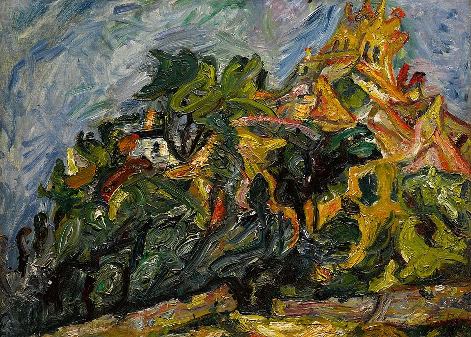
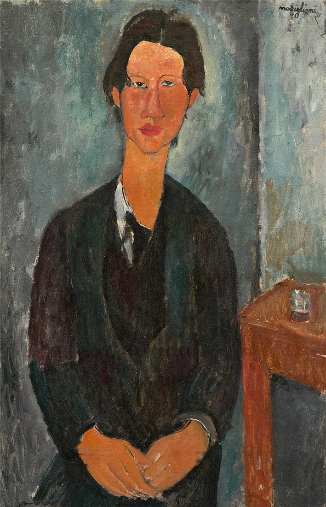

Galerie d’art · Paris
Au cœur
des couleurs.
De vrais tableaux, des regards singuliers et la passion de la peinture. Une invitation à découvrir l’expression et les émotions de l’École de Paris.
Plus de 30 ans de passion pour la peinture


PASCIN / SOUTINE
À découvrir
La beauté se trouve
dans le détail.
Portraits sensibles, paysages en mouvement et lumière sur la matière : Dédal des Couleurs met en dialogue des peintres emblématiques du Paris artistique du début du XXe siècle.
Voir la sélection commentée
Restons en contact
L’art se partage.
Découvertes, actualités de la galerie, projets d’exposition : recevez un aperçu de notre univers.
Découvrir le formulaire